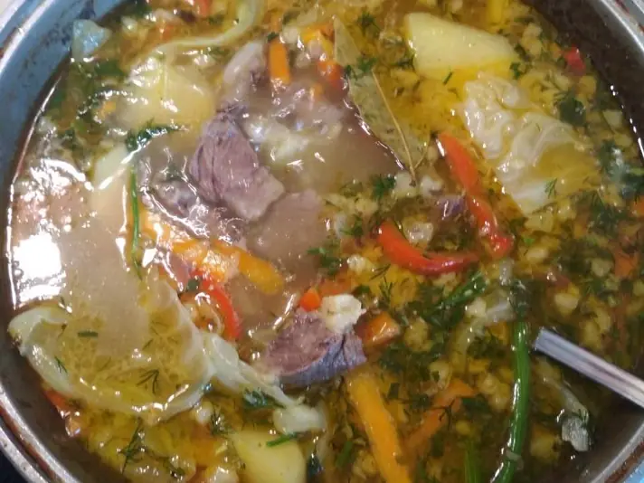

Фото: Bgelo777, CC BY-SA 4.0

Шурпа из баранины
Наваристый суп из баранины на кости с крупно нарезанными овощами и нутом
150 мин6 порц.462 ккал на порциюБ 30 · Ж 28 · У 24Среднеазиатская кухня
Продукты на 6 порц.
- Баранина1000 г
- Вода3 л
- Нут по желанию0,5 стак.
- Лук репчатый2 шт
- Морковь2 шт
- Картофель4 шт
- Перец болгарский1 шт
- Помидоры2 шт
- Чеснок2 зуб.
- Зира0,5 ч. л.
- Лавровый лист2 шт
- Соль2,5 ч. л.
- Перец чёрный молотый0,5 ч. л.
- Кинза0,5 пучок
- Укроп0,5 пучок
Как готовить
- Нут замочите на ночь. Баранину на кости залейте холодной водой, доведите до кипения на сильном огне и снимите пену.
- Добавьте нут и одну целую луковицу, убавьте огонь до слабого и варите 1,5 часа.
- Выньте луковицу. Положите морковь, нарезанную крупными брусками, варите 15 минут.
- Добавьте картофель половинками, перец крупными кусками и помидоры дольками, варите 20 минут, пока картофель не станет мягким.
- Посолите, добавьте зиру, лавровый лист, перец и чеснок, варите 5 минут.
- Выключите огонь, дайте постоять 15 минут. Подавайте с рубленой зеленью и тонкими кольцами сырого лука.
Совет. Шурпа должна кипеть еле-еле, тогда бульон получится прозрачным. Мясо и овощи часто подают отдельно на блюде, а бульон в пиалах.